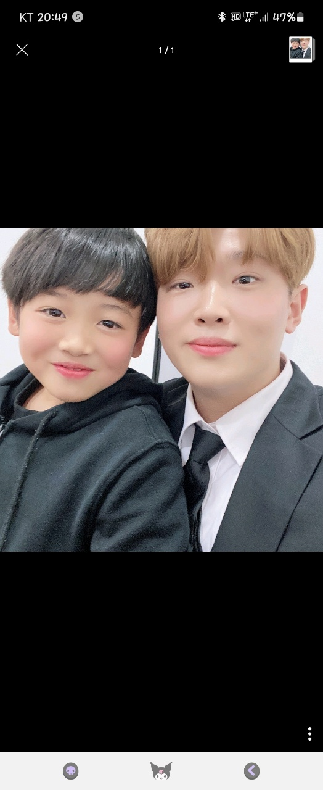

변동환은 현재 활진이 라는 곳에서 일도하고 공부도 하는중이다. 그리고 나의 계획은 화이트 햇 해커가 되는것이 나의 꿈이다 그리하여 나는 현재 크게는 나는 프로그래밍 언어 와 웹 언어를 공부를 하는중이다. 작게는 c언어와 그리고 html를 공부를 하고있다. 앞으로는 프로그래밍 언어 공부는 음... c언어 와 파이썬 과 자바 까지 할 생각이다. 웹 언어는 html 과 그리고 css 와 javascript 와 php를 공부를 할 예정이다. 나의 궁극적 목표는 30세 전 까지 화이트 햇 해커가 되는것이 나의 소망이다. 지금른 html를 복습 중이다.
링크도 걸어보고 이미지 그리고 나서 이것 저것을 해볼것이다.
 그리고 저 사진은 할머니 빈소에서 셋째 동생이랑 찍은 사진이다.